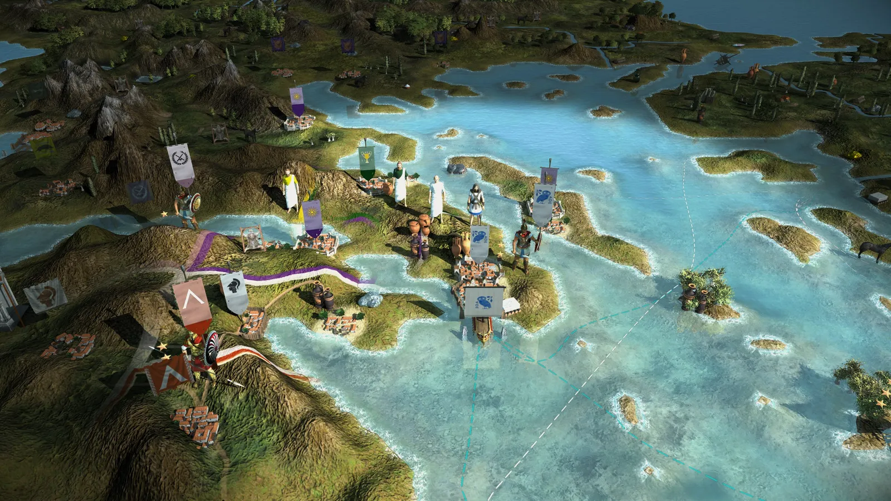
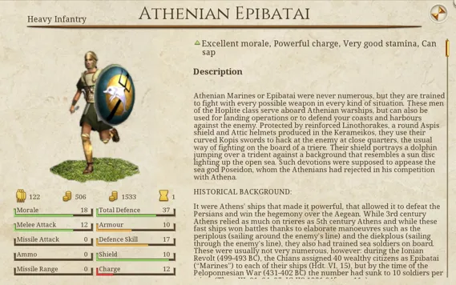
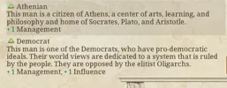
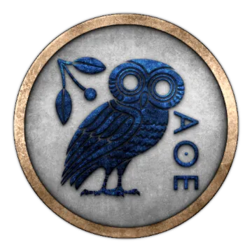
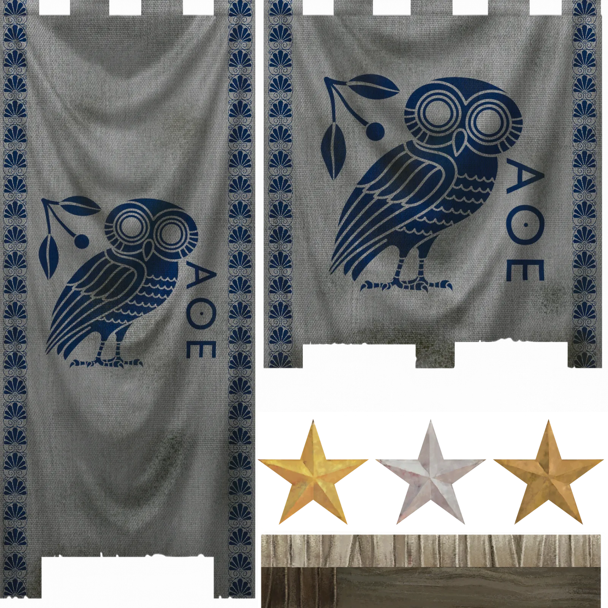
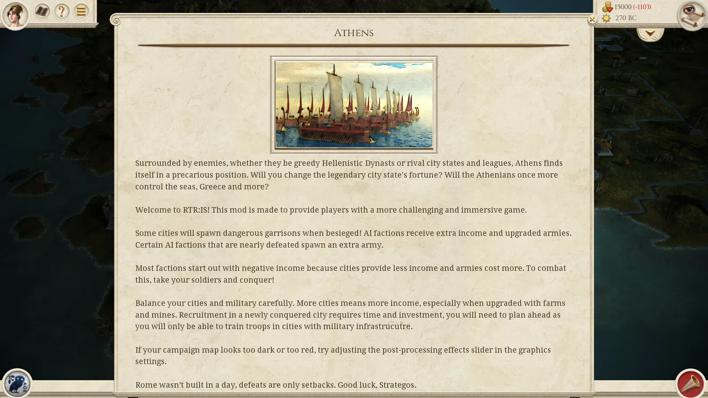

RTR: Imperium Surrectum
RTR: Imperium SurrectumAthens
2022-01-17 · Tarnholm
"Since to be happy means to be free, and since to be free means to be brave, do not shy away from the risks of war." – Perikles of Athens
Chaire, it’s me! Let’s take a walk, my friend. Ah, how good it is to breathe the air of the Kerameikos, an air full of discoveries and ingenuity. Watch the potters, how they create the finest red figured vases. An Athenian invention, known throughout the Oikumene. My cousin’s wife said her brother lived in Massalia and the drinking vessels they use are made in the Kerameikos, and my sister’s husband says his uncle in Lykia, too, only drinks his Rhodian wine from an Athenian Kylix. Ignore the hucksters sitting in front of their houses, do not listen to their shouts, but respect the passion they show for their profession. Marvel at the skills of the ironsmiths and bronzesmiths, sons of Hephaistos himself, at the quality of their swords and daggers. Bath in the masses, feel the atmosphere that has filled this city ever since the days of Ephialtes, since the beginning of democracy. Leave the Kerameikos and enter the Agora, the centre of political life. For what is the life of a citizen if not politics? Is man not born a political animal?
The western side of the Agora is dominated by the magnificent Temple of Hephaistos, a place for the manufacturers of the Kerameikos, and for many members of the Metoikoi, the foreigners who live in our blossoming city. On the northern end, you will see history happening, where the stoics meet in the Stoa Poikile, the coloured hall. They discuss ideas that will change our lives for the better, led by the genius that is Zenon of Kition, who also taught me and made me the man I am. In the middle of the Agora, you will find merchants from places as far as Phoenicia or Italy offering goods from all over the world. How luxurious are the Persian clothes over there, the purple snails from Tyre here, how splendid the golden torques from Galatia and the gemstones of the Aethiopians! But beware, do not quickly spend all your hard-earned Obols on cheap trinkets, these days no one is safe from forgeries and deception!
Next, we are walking past the house of the Archon Basileus and the seat of the Strategoi, in the shadow of the Areios Pagos. Raise your eyes towards the mighty rock, where the noblest Athenians regularly meet to sit in judgement on those citizens who have violated the laws once given to us by Solon and Kleisthenes. Now, however, we stroll ahead, under the scorching midday sun, and follow the crowded road to the East, which is slowly rising under our feet. Look up and behold, towering above the city, the Akropolis: see the marvellous architecture of the colourful Parthenon, the stunning details of the Caryatids at the Erechtheion, and admire the elegance of the Temple of Nike. This holy mountain is not a work of the Gods, but a work of the Athenians: under the guidance of Perikles, our forefathers built these wonders, testimony to the incredible spirit and mind of the Athenians, us, the earthborn, the autochthonous inhabitants of Attika. .
On the way down from the Akropolis we pass the Peripatos, where great thinkers are walking down the hallways and through the gardens, pondering on the makeup of the cosmos and the meaning of life. Have you spotted the old and wise man over there? He is no less than Straton of Lampsakos, the head of the school, who followed in the footsteps of the famous Theophrastos. What a view he has from this place, over the grand theatre of Dionysos, where Aischylos and Sophokles presented their world-renowned tragedies and comedies, towards the huge Olympieion, the largest temple in the Greek world… well, once it’s finished, that is. Beyond the city walls he will discover the Panathenaic stadium, which knows no rivals in either West or East!\n\nBut when he turns his gaze to the South, it will eventually rest on the Peiraeus. Thence the wooden walls of Themistokles set sail to face the fleet of the Medians and win the freedom of Hellas in the shallow waters of Salamis. But now, oh cruel Gods, our city, the queen of poleis, the earthborn dwelling of Pallas Athena, has to bear the insult of a foreign garrison in the Peiraeus. Ever since the disaster of Krannon and the suicide of our beloved Demosthenes, the filthy Macedonians have occupied our grand harbour. Our city became a toy in the wars of the Barbarian kings, and in the last decades many of our citizens left their ancestral home for far away shores, settling in new cities such as Alexandreia in Egypt and Antiocheia on the Orontes.
Yet even in the darkest of times, there is also hope. In the second year of the 123rd Olympiad (287 BC), King Ptolemaios of Egypt sent his loyal supporter Kallias, a citizen of Athens, to free the Akropolis and the city itself from the brutal soldiers of the Macedonians. The revered Kallias is now our ambassador to the son of Ptolemaios, and his ambassador to us, but the Peiraeus is still occupied and Oropos, a town that rightly belongs to us Athenians according to history, had to be ceded to the Boeotians, those pigs. King Seleukos be praised for returning Lemnos to the people of Athens before he died, but our empire is now not even a shadow of its former self. We helped the Aitolians to save Greece from the Celts only a few years ago, but who thanked us for our brave deeds?
Now is the time to act. Messengers have arrived from Queen Arsinoe, the Sister-Wife of Ptolemaios the Younger, to ask for an alliance. They promise that the Lakedaimonians, our old arch enemies, are on our side, and the Achaians, too, will join in with us and the Egyptians in working towards a most noble goal: to liberate Greece from the Macedonian yoke. Listen to me, my friends, my fellow citizens. Are we not proud Athenians? Are we not the offspring of the Earthborn, of Aigeus and Theseus? Listen to me, Chremonides, son of Eteokles of the Demos Aithalidai, of the tribe of Leontis, member of an old and honourable Athenian family. For is it not true that to be happy means to be free, and to be free means to be brave? But if to be free really means to be brave, do not shy away from the war against the Macedonians! Athens will rise, and our people will reclaim what is rightfully theirs! May Pallas Athena lead us to victory!" .
Hello everyone! A new year and a new Dev Diary!
All you Owl fans out there are in for a treat, today's diary is all about Athens! Athens, once the city of light, the birthplace of democracy, is now a mere shadow of its former self. Reduced to no more than its namesake city and under constant Antigonid threat, Athens may now be forced into an unholy alliance with its former arch-rival Sparta.
Surrounded by enemies, whether they be greedy Hellenistic Dynasts or rival city states and leagues, Athens finds itself in a precarious position. Will you change the legendary city state's fortune? Will the Athenians once more control the seas, Greece and more?

Athens will ofc have some unique units and with those comes some great unit descriptions. Here is one that you can expect to play with in the 0.4.0 update:
Athenian Marines or Epibatai were never numerous, but they are trained to fight with every possible weapon in every kind of situation. These men of the Hoplite class serve aboard Athenian warships, but can also be used for landing operations or to defend your coasts and harbours against the enemy. Protected by reinforced Linothorakes, a round Aspis shield and Attic helmets produced in the Kerameikos, they use their curved Kopis swords to hack at the enemy at close quarters, the usual way of fighting on the board of a triere. Their shield portrays a dolphin jumping over a trident against a background that resembles a sun disc lighting up the open sea. Such devotions were supposed to appease the sea god Poseidon, whom the Athenians had rejected in his competition with Athena.
HISTORICAL BACKGROUND
It were Athens’ ships that made it powerful, that allowed it to defeat the Persians and win the hegemony over the Aegean. While 3rd century Athens relied as much on trieres as 5th century Athens and while these fast ships won battles thanks to elaborate manoeuvres such as the periplous (sailing around the enemy’s line) and the diekplous (sailing through the enemy’s line), they also had trained sea soldiers on board. These were usually not very numerous, however: during the Ionian Revolt (499-493 BC), the Chians assigned 40 wealthy citizens as Epibatai (“Marines”) to each of their ships (Hdt. VI, 15), but by the time of the Peloponnesian War (431-402 BC) the number had sunk to 10 soldiers per triere (Thuc. III, 91; 94; 95; IG II2 1951,84fseq.: 11e). Epibatai would not only fight on board of their own or enemy ships. They would also be used for landing operations, often supported by armed rowers (as Phil De Souza has repeatedly argued), and on the larger warships of the Hellenistic East they would operate artillery such as catapults (first mentioned in Athens in the inscription IG II², 120, l. 37, dating to some point between 358 and 354 BC). Accordingly, they fought with all kinds of weapons, but almost always in lighter armour than Hoplites, since the weight of the metal would mean certain death should an Epibates go overboard – a Linothorax was the heaviest possible armour. While preferring the thrusting spear of the Hoplite and Greek swords such as the Kopis or Machaira for melee, the “Marines” of Athens especially were also skilled with javelin and bow, and Plato (Laches p. 183D) mentions an Epibates who fought with a spear sickle (dorydrépanon); irregular weapons such as these may have been more common.
After its defeat in the Lamian War against Macedon in 322 BC, Athens ceased to be a naval power. However, in 281 BC, upon the death of Lysimachos, his conqueror Seleukos Nikator returned the island of Lemnos to the Athenians. Over a century later, the Romans passed Delos into the hands of Athens, and other small islands were controlled by the Athenians during this period. Therefore, a small squad of trieres must have existed and may have been extended - similarly to other parts of the armed forces - in the immediate prelude to the Chremonidean War (267-261 BC). Around the time of the Lamian War, larger troops carriers such as Tetreres and Penteres are also attested at Athens (IG II², 1632 (II, 812) a) and they, too, may have been built again for the renewed conflict against Antigonid Macedon."

They will also get their own traits:

Our 2D artists have created some brilliant new banners and a new faction icon:


0.4.0 will also introduce a starting event for each faction with some general advice for players. As we add new mechanics they will most likely be added to these events.

That's it for this week. We hope you enjoyed seeing a little bit more about what's coming with the upcoming release of RIS 0.4.0.